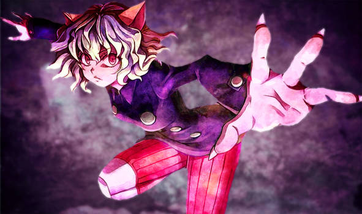
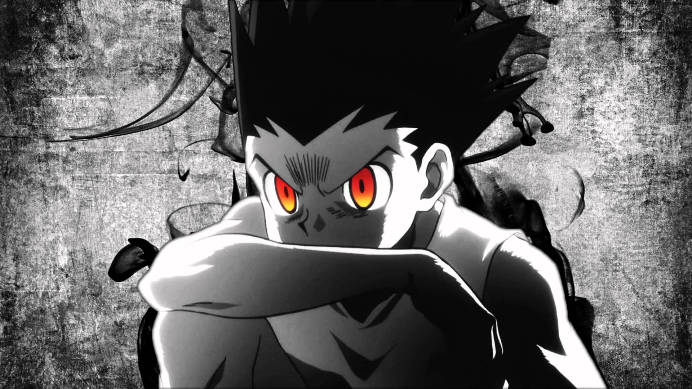

Gon x Neferpitou (Hunter X Hunter) - Homem Gentil I Autor : Enygma

A Lealdade de Neferpitou aos Ants: Neferpitou é uma das principais antagonistas em "Hunter x Hunter" e faz parte do grupo conhecido como "Quimera Ants". Uma curiosidade sobre Neferpitou é que ela é um dos membros mais leais e devotos aos Ants. Ela é extremamente leal ao Rei das Formigas e está disposta a fazer qualquer coisa para protegê-lo. Essa lealdade é demonstrada quando Neferpitou luta ferozmente contra os inimigos do Rei e mostra uma dedicação inabalável à sua causa. Apesar de ser uma personagem vilã, a lealdade de Neferpitou é um traço marcante que adiciona complexidade ao seu papel na história.

Determinação Inabalável de Gon: Gon Freecss, o protagonista de "Hunter x Hunter", é conhecido por sua incrível determinação. Uma curiosidade interessante sobre Gon é que ele é um personagem que se destaca por sua coragem e força de vontade inabaláveis. Ele está disposto a arriscar tudo para alcançar seus objetivos e proteger seus amigos. Essa determinação é evidenciada em momentos-chave da história, onde ele demonstra uma incrível capacidade de superar desafios e obstáculos, mesmo que isso signifique colocar sua própria vida em perigo.